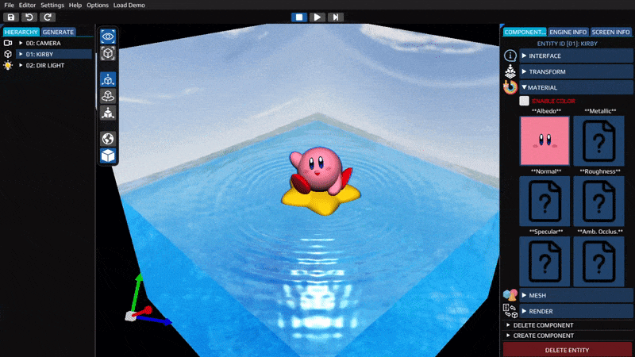
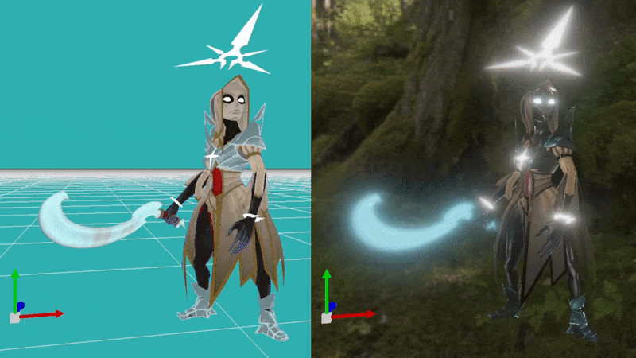

Project Information
- Category: Graphic Programming
- Language: C++
- Graphic API: OpenGL & DirectX11
- Project Date: 02 June 2023
- Made by: Sebastián Valdés
My first Graphic Engine 🍗
Poyo Engine is a custom-built video game engine crafted entirely using C++ and OpenGL.
It is structured around components, utilizing an Entity Component System (ECS) and offers various features including:
- Friendly UI
- Deferred Shading
- Frustum Culling
- PBR Materials
- Skeletal Animations
- Logger System
- Gizmo Transform
- Shadows
- Port To DX11
- Picking System
- IBL
- Undo/Redo System
|

Water & Caustics |

Skeletal Animation |

Deferred Shading |

PBR Materials + Emissive [inactive/active] |
Entity Component System (ECS)
The engine's architecture employs entities and components, utilizing the Entity Component System (ECS) to streamline the utilization of diverse engine elements. This approach distributes functionalities such as rendering, camera control, lighting, and transformation across distinct classes that collectively form an entity.
The system revolves around entities and components, with entities serving as containers for components, offering identification and organization for these constituent parts.
Currently, Poyo Engine has available the following components:
- Animator
- Audio
- Billboard
- Camera
- Hierarchy
- Interface
- Light
- Static Mesh
- Skeletal Mesh
- Particle
- Render
- Text 2D
- Text 3D
- Transform
What Knowledge Have I Acquired?
This project has provided me with a robust understanding of graphics engine design principles, along with practical skills in programming, optimization, and resolving challenges specific to game development:
- Graphics Engine Design:
- Skeletal Animations:
- Cross-Platform:
- Deferred Shading:
- User Interface and Interaction:
- Optimization :
Mastering OpenGL and C++ for features such as deferred shading, shadows, frustum culling, PBR materials, emissive materials and IBL.
In-depth knowledge of character rigging and efficient implementation of animation controllers.
Experience in porting to DX11, providing insights into cross-platform challenges and codebase versatility.
Implementing G-buffer, lighting passes, and post-processing effects for visually stunning and performance-efficient graphics.
Designing a user-friendly UI, logger system, gizmo transform, and picking system, enhancing user experience.
A focus on performance involving efficient rendering pipelines, memory management, and algorithmic improvements.
Code Example
#include "poyo_engine.h"
using namespace poyo;
int main(int argc, char** argv) {
//1º Declare a Window variable:
auto maybe_window = Window::create("Poyo Version X", 1600, 900);
if (!maybe_window) return -1;
Window& currentWindow = *maybe_window;
//2º Declare an Input variable
Input& currentInput = currentWindow.getInput();
while (!currentWindow.shouldClose()) {
UpdateEngine(currentWindow); //Updates Delta Time & Commands
if (currentInput.isPressed(Keys::KEY_F11))
currentWindow.makeFullScreen(); //Makes Full Screen
//Finally, call the render function
currentWindow.render();
}
return 0;
}
Upcoming Enhancements
In the pipeline for PoyoEngine is the integration of a robust Physics Engine. This enhancement aims to elevate the engine's capabilities by introducing realistic physics simulations, enabling dynamic object interactions and immersive gameplay experiences.